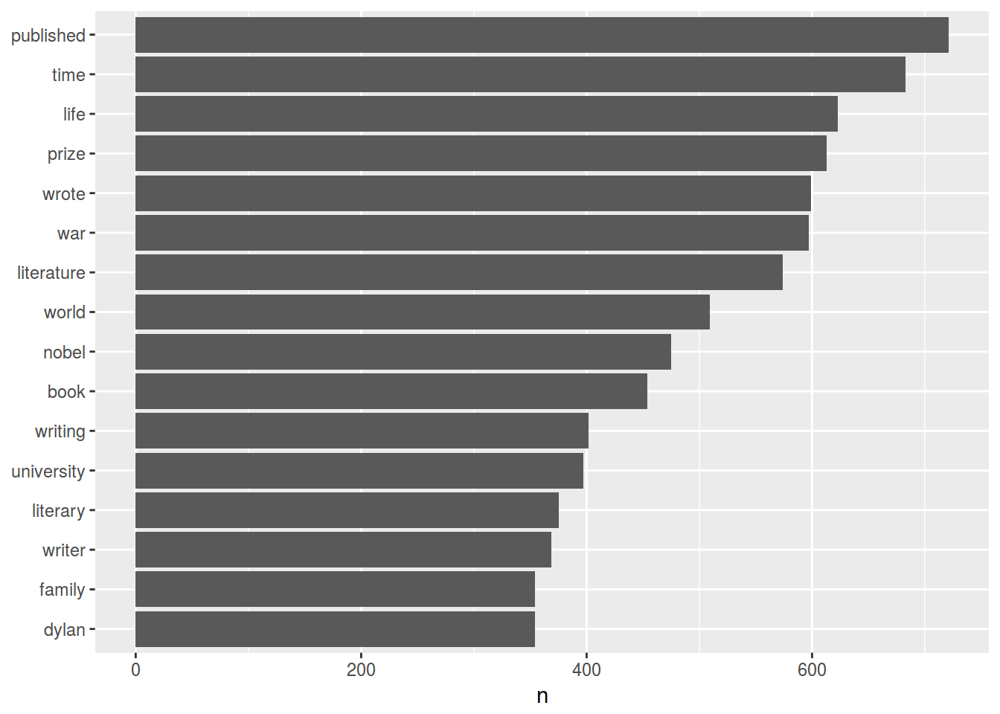
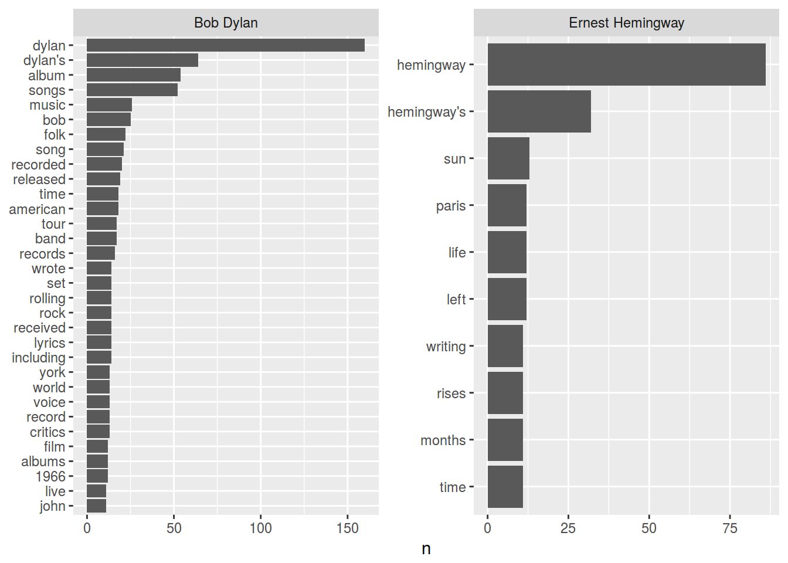

Сегодня нам понадобятся библиотеки:
install.packages("rvest")
install.packages("tidytext")library(rvest)
library(tidytext)
library(tidyverse)Можно долго и нудно бороться с тегами скаченной веб-страницы, однако можно использовать CSS-селекторы.
source <- read_html("https://ling.hse.ru/news/")rvestsource %>%
html_nodes("div.post:nth-child(2) > div:nth-child(2) > h2:nth-child(1)") %>%
html_text() ->
titles
titles## [1] "При участии школы лингвистики вышла новая версия Universal Dependencies"rvestsource %>%
html_nodes("h2") %>%
html_text() ->
titles
titles## [1] "«Голый кондуктор бежит под трамваем»"
## [2] "При участии школы лингвистики вышла новая версия Universal Dependencies"
## [3] "В школе лингвистики прошел воркшоп по «бесермяноведению и черемистике»"
## [4] "«Я рассматриваю македонский язык как ключ к Балканам»"
## [5] "Цифровые методы от Платона до Тарантино"
## [6] "«Нет, мы не готовим переводчиков... зато лингвисты работают в Google»"
## [7] "«Неунылый» комментарий к «Холодному лету» Мандельштама"
## [8] "Жизнь минус любовь = прозябание, или обновлённый RusVectōrēs"
## [9] "«Не ожидала, что обучение русскому языку через игры может кого-то удивить»"
## [10] "«Здесь каждый камушек пропитан студенчеством»"Давайте сделаем аналогичное для текстов
source %>%
html_nodes("div.post__text") %>%
html_text() ->
texts
head(texts)## [1] "\n\t\t\t\t\n\t\t\t\t\t\n\t\t\t\t\n\t\t\t\tВ минувшую среду доцент школы лингвистики Борис Иомдин провел занятие в школе юного филолога НИУ ВШЭ. Он рассказал школьникам и их родителям о ложных друзьях переводчика.\n\t\t\t"
## [2] "\n\t\t\t\t\n\t\t\t\t\t\n\t\t\t\t\n\t\t\t\tМеждународный проект универсальной языконезависимой синтаксической разметки Universal Dependencies объявил о выходе версии 2.0. В числе новых ресурсов — языковые корпуса от школы лингвистики НИУ ВШЭ.\n\t\t\t"
## [3] "\n\t\t\t\t\n\t\t\t\t\t\n\t\t\t\t\n\t\t\t\tИсследователи финно-угорских языков из Вышки и МГУ обсудили в стенах школы лингвистики открытия и находки из недавних экспедиций.\n\t\t\t"
## [4] "\n\t\t\t\t\n\t\t\t\t\t\n\t\t\t\t\n\t\t\t\tСо следующего учебного года список языков, изучаемых в школе лингвистики, пополнится македонским. Преподавать его будет старший научный сотрудник Института славяноведения РАН Максим Макарцев, крупный специалист по этому языку и по балканистике в целом. На вводной лекции он рассказал студентам о македонском, Македонии и немного — об Александре Македонском.\n\t\t\t"
## [5] "\n\t\t\t\t\n\t\t\t\t\t\n\t\t\t\t\n\t\t\t\tВ минувшую субботу студенты минора «Современные методы в гуманитарных науках» представили свои исследования, выполненные в русле Digital Humanities. Доклады были сделаны в рамках коллоквиума, организованного преподавателями школы лингвистики.\n\t\t\t"
## [6] "\n\t\t\t\t\n\t\t\t\t\t\n\t\t\t\t\n\t\t\t\tШкола лингвистики поучаствовала в Дне открытых дверей бакалавриата НИУ ВШЭ — и развеяла несколько мифов о лингвистах.\n\t\t\t"Скачайте список нобелевских лауреатов по литературе.
## [1] "Shmuel Yosef Agnon" "Vicente Aleixandre" "Svetlana Alexievich"
## [4] "Ivo Andrić" "Miguel Ángel Asturias" "Samuel Beckett"## [1] "https://en.wikipedia.org/wiki/Tomas_Tranströmer"
## [2] "https://en.wikipedia.org/wiki/Sigrid_Undset"
## [3] "https://en.wikipedia.org/wiki/Mario_Vargas_Llosa"
## [4] "https://en.wikipedia.org/wiki/Derek_Walcott"
## [5] "https://en.wikipedia.org/wiki/Patrick_White"
## [6] "https://en.wikipedia.org/wiki/W._B._Yeats"Скачайте тексты всех статей
создайте тиббл (data_frame) с двумя переменными name и text, со списком авторов и текстами о них
nobel_laureates <- data_frame(name = eng_list, texts)
str(nobel_laureates)## Classes 'tbl_df', 'tbl' and 'data.frame': 113 obs. of 2 variables:
## $ name : chr "Shmuel Yosef Agnon" "Vicente Aleixandre" "Svetlana Alexievich" "Ivo Andrić" ...
## $ texts: chr "Shmuel Yosef Agnon (Hebrew: שמואל יוסף עגנון) (July 17, 1888 – February 17, 1970)[1] was a Nobel Prize laureate writer and was "| __truncated__ "Vicente Pío Marcelino Cirilo Aleixandre y Merlo (26 April 1898 – 14 December 1984) was a Spanish poet who was born in Seville i"| __truncated__ "Svetlana Alexandrovna Alexievich[1] (born 31 May 1948 in Stanislaviv, Ukrainian SSR) is a Belarusian investigative journalist a"| __truncated__ "Ivo Andrić (Serbian Cyrillic: Иво Андрић, pronounced [ǐːʋɔ ǎːndritɕ]; born Ivan Andrić; 9 October 1892 – 13 March 1975) was a Y"| __truncated__ ...unnest_tokens делает из строк Tidy text!
nobel_laureates %>%
unnest_tokens(word, texts) ->
nobel_laureates
head(nobel_laureates)## # A tibble: 6 × 2
## name word
## <chr> <chr>
## 1 Shmuel Yosef Agnon shmuel
## 2 Shmuel Yosef Agnon yosef
## 3 Shmuel Yosef Agnon agnon
## 4 Shmuel Yosef Agnon hebrew
## 5 Shmuel Yosef Agnon שמואל
## 6 Shmuel Yosef Agnon יוסףДавайте посчитаем слова!
nobel_laureates %>%
count(word, sort = TRUE) ->
word_count
head(word_count)## # A tibble: 6 × 2
## word n
## <chr> <int>
## 1 the 21457
## 2 of 12714
## 3 in 11652
## 4 and 10561
## 5 a 7929
## 6 to 7442Эти ребята вставили стопслова!
data(stop_words)
nobel_laureates %>%
anti_join(stop_words) %>%
count(word, sort = TRUE)## # A tibble: 27,586 × 2
## word n
## <chr> <int>
## 1 published 721
## 2 time 683
## 3 life 623
## 4 prize 613
## 5 wrote 599
## 6 war 597
## 7 literature 574
## 8 world 509
## 9 nobel 475
## 10 book 454
## # ... with 27,576 more rowsДавайте нарисуем картинку!
nobel_laureates %>%
anti_join(stop_words) %>%
count(word, sort = TRUE) %>%
filter(n > 350) %>%
mutate(word = reorder(word, n)) %>%
ggplot(aes(word, n)) +
geom_bar(stat = "identity") +
xlab(NULL) +
coord_flip()
А как это устроено по авторам?
nobel_laureates %>%
filter(name == c("Bob Dylan", "Ernest Hemingway")) %>%
anti_join(stop_words) %>%
group_by(name) %>%
count(word, sort = TRUE) %>%
filter(n > 10) %>%
mutate(word = reorder(word, n)) %>%
ggplot(aes(word, n)) +
geom_bar(stat = "identity") +
xlab(NULL) +
coord_flip() +
facet_wrap(~name, scales = "free")